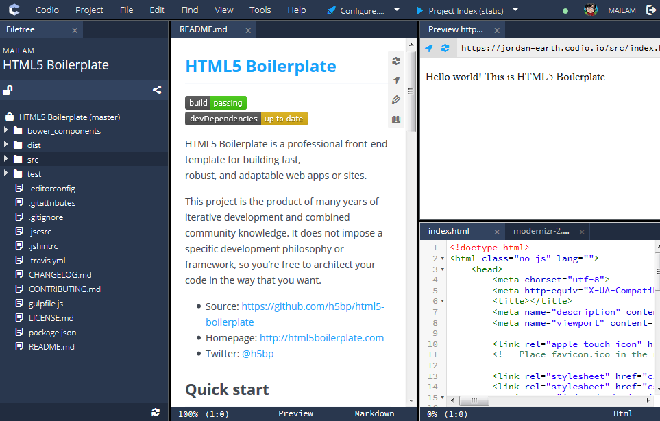

IDE panels let you create any panel configuration you want for both code editing and also other features (such as Git, Deployment etc.).
This gives you complete control over the layout of your project. Whenever you leave you project, its precise pane configuration is saved and reloaded when you come back to it.

File Tree
The main file tree itself is a tab within a panel. If you look carefully, you will see that it can receive focus and the Filetree text is in a tab.
As a result, you can perform the exact same set of operations on it as with any other tab content. It can be moved around, removed, reinstated etc.
Panel Focus
If you have multiple panels, the panel you click within gets the focus and can be seen by a white border.
If you want to open a file in a different panel, first click on that panel and then open a file from the file tree.
Tabs
You can add any number of tabs into a single panel. You are also free to drag tabs around to change their order.
Tabs can also be dragged from one panel to another.
Panel Management
Tabs can be created from the View > Panels menu or by using hotkeys. The next section explain the panel actions available.
Panel actions
Codio lets you manage panels using either hotkeys or from the View > Panels menu.
Reset to Default Layout
If you want to quickly go back to a basic IDE layout, then this is easily done.
Mac : Cmd+Alt+R
Win : Ctrl+Alt+R
Menu : View > Layouts > Default Layout
Split Vertical
This splits the selected panel by drawing a vertical line down the middle, so you end up with two panels side by side.
Mac : Cmd+Alt+V
Win : Ctrl+Alt+V
Split Horizontal
This splits the selected panel by drawing a horizontal line across the middle, so you end up with one panel on top of the new panel.
Mac : Cmd+Alt+H
Win : Ctrl+Alt+H
Close Panel
This will close the selected panel and all the tabs within it.
Mac : Cmd+Alt+C
Win : Ctrl+Alt+C
Restore File Tree
If you deliberately or inadvertently close the file tree, you can restore it from the View > Open/Show File Tree menu.
Switch Tabs
You can cycle between tabs in a panel using the keyboard. Alt+Shift+. takes you to the previous tab and Alt+Shift+. to the next. If you don't like those key bindings, open up your preferences and change the tab_switch_left and tab_switch_right item.
Expand tabs full screen
If you have multiple panels open, you may find that you like the arrangement but some of the panels are too small for code editing.
Full screen mode is activated by selecting a tab and then pressing (by default) F11. You can shrink it back into the tab by pressing F11 again.
Some Mac users may find that F11 is blocked. You can easily modify the keyboard shortcut in Codio Preferences.